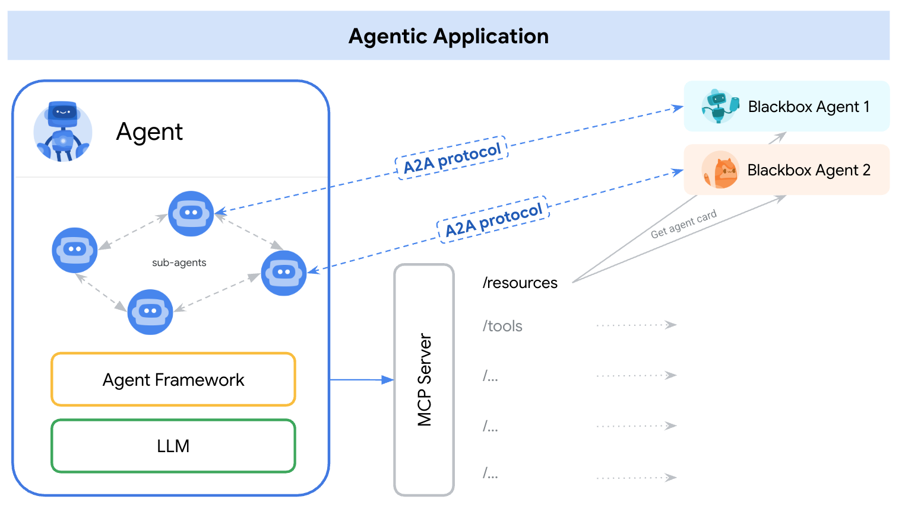

A2A and MCP: Complementary Protocols for Agentic Systems¶
A2A ❤️ MCP¶
In the landscape of AI agent development, two key types of protocols are emerging to facilitate interoperability: those for connecting agents to tools and resources, and those for enabling agent-to-agent collaboration. The Agent2Agent (A2A) Protocol and the Model Context Protocol (MCP) address these distinct but related needs.
TL;DR; Agentic applications need both A2A and MCP. We recommend MCP for tools and A2A for agents.
Why Different Protocols?¶
The distinction arises from the nature of what an agent interacts with:
-
Tools & Resources:
- These are typically primitives with well-defined, structured inputs and outputs. They perform specific, often stateless, functions (e.g., a calculator, a database query API, a weather lookup service).
- Their behavior is generally predictable and transactional.
- Interaction is often a single request-response cycle.
-
Agents:
- These are more autonomous systems. They can reason, plan, use multiple tools, maintain state over longer interactions, and engage in complex, often multi-turn dialogues to achieve novel or evolving tasks.
- Their behavior can be emergent and less predictable than a simple tool.
- Interaction often involves ongoing tasks, context sharing, and negotiation.
Agentic applications need to leverage both: agents use tools to gather information and perform actions, and agents collaborate with other agents to tackle broader, more complex goals.
Model Context Protocol (MCP)¶
- Focus: MCP standardizes how AI models and agents connect to and interact with tools, APIs, data sources, and other external resources.
- Mechanism: It defines a structured way to describe tool capabilities (akin to function calling in Large Language Models), pass inputs to them, and receive structured outputs.
- Use Cases:
- Enabling an LLM to call an external API (e.g., fetch current stock prices).
- Allowing an agent to query a database with specific parameters.
- Connecting an agent to a set of predefined functions or services.
- Ecosystem: MCP aims to create an ecosystem where tool providers can easily expose their services to various AI models and agent frameworks, and agent developers can easily consume these tools in a standardized way.
Agent2Agent Protocol (A2A)¶
- Focus: A2A standardizes how independent, often opaque, AI agents communicate and collaborate with each other as peers.
- Mechanism: It provides an application-level protocol for agents to:
- Discover each other's high-level skills and capabilities (via Agent Cards).
- Negotiate interaction modalities (text, files, structured data).
- Manage shared, stateful, and potentially long-running tasks.
- Exchange conversational context, instructions, and complex, multi-part results.
- Use Cases:
- A customer service agent delegating a complex billing inquiry to a specialized billing agent, maintaining context of the customer interaction.
- A travel planning agent coordinating with separate flight, hotel, and activity booking agents, managing a multi-stage booking process.
- Agents exchanging information and status updates for a collaborative project that evolves over time.
- Key Difference from Tool Interaction: A2A allows for more dynamic, stateful, and potentially multi-modal interactions than typically seen with simple tool calls. Agents using A2A communicate as agents (or on behalf of users) rather than just invoking a discrete function.
How A2A and MCP Complement Each Other¶
A2A and MCP are not mutually exclusive; they are highly complementary and address different layers of an agentic system's interaction needs.

An agentic application might use A2A to communicate with other agents, while each agent internally uses MCP to interact with its specific tools and resources.
Example Scenario: The Auto Repair Shop¶
Consider an auto repair shop staffed by autonomous AI agent "mechanics" who use special-purpose tools (such as vehicle jacks, multimeters, and socket wrenches) to diagnose and repair problems. The workers often have to diagnose and repair problems they have not seen before. The repair process can involve extensive conversations with a customer, research, and working with part suppliers.
-
Customer Interaction (User-to-Agent via A2A):
- A customer (or their primary assistant agent) uses A2A to communicate with the "Shop Manager" agent: "My car is making a rattling noise."
- The Shop Manager agent uses A2A for a multi-turn diagnostic conversation: "Can you send a video of the noise?", "I see some fluid leaking. How long has this been happening?"
-
Internal Tool Usage (Agent-to-Tool via MCP):
- The Mechanic agent, assigned the task by the Shop Manager, needs to diagnose the issue. It uses MCP to interact with its specialized tools:
- MCP call to a "Vehicle Diagnostic Scanner" tool:
scan_vehicle_for_error_codes(vehicle_id='XYZ123'). - MCP call to a "Repair Manual Database" tool:
get_repair_procedure(error_code='P0300', vehicle_make='Toyota', vehicle_model='Camry'). - MCP call to a "Platform Lift" tool:
raise_platform(height_meters=2).
- MCP call to a "Vehicle Diagnostic Scanner" tool:
- The Mechanic agent, assigned the task by the Shop Manager, needs to diagnose the issue. It uses MCP to interact with its specialized tools:
-
Supplier Interaction (Agent-to-Agent via A2A):
- The Mechanic agent determines a specific part is needed. It uses A2A to communicate with a "Parts Supplier" agent: "Do you have part #12345 in stock for a Toyota Camry 2018?"
- The Parts Supplier agent, also an A2A-compliant system, responds, potentially leading to an order.
In this example:
- A2A facilitates the higher-level, conversational, and task-oriented interactions between the customer and the shop, and between the shop's agents and external supplier agents.
- MCP enables the mechanic agent to use its specific, structured tools to perform its diagnostic and repair functions.
Representing A2A Agents as MCP Resources¶
It's conceivable that an A2A Server (a remote agent) could also expose some of its skills as MCP-compatible resources, especially if those skills are well-defined and can be invoked in a more tool-like, stateless manner. In such a case, another agent might "discover" this A2A agent's specific skill via an MCP-style tool description (perhaps derived from its Agent Card).
However, the primary strength of A2A lies in its support for more flexible, stateful, and collaborative interactions that go beyond typical tool invocation. A2A is about agents partnering on tasks, while MCP is more about agents using capabilities.
By leveraging both A2A for inter-agent collaboration and MCP for tool integration, developers can build more powerful, flexible, and interoperable AI systems.